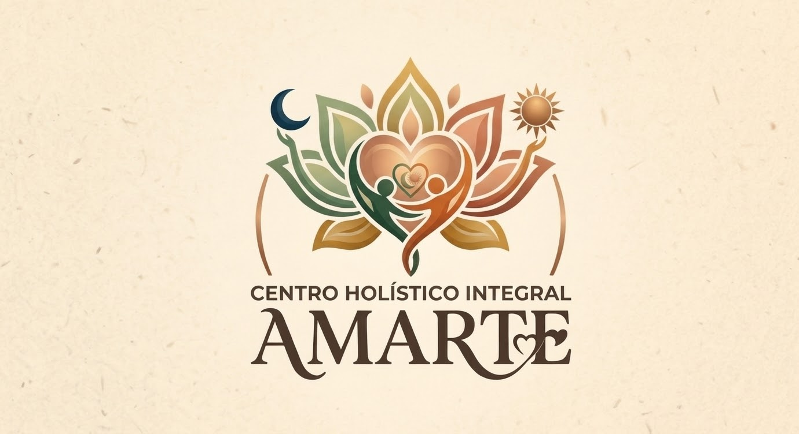
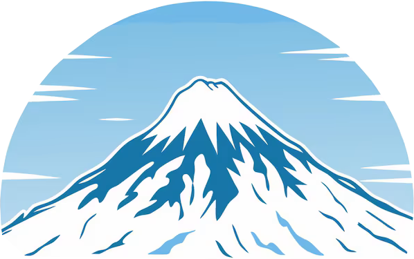

Desarrollo web
- HTML
- CSS
- JavaScript
- React
- Vite
- Bootstrap
Estudiante de Ingeniería en Informática
Mención en Ciencia de Datos · Duoc UC
Me interesa desarrollar soluciones digitales y profundizar en el análisis de datos. Complemento mi formación con certificaciones en ciberseguridad, área en la que me gustaría especializarme.
01 / Perfil
Una base en informática, con foco académico en datos y aprendizaje continuo en ciberseguridad.
Actualmente curso Ingeniería en Informática con mención en Ciencia de Datos en Duoc UC. Mi formación académica se complementa con certificaciones de CertiProf en fundamentos, concientización, hacking ético y liderazgo en ciberseguridad.
Me caracterizan la responsabilidad, la atención al detalle, la disposición para aprender y el trabajo colaborativo. Estoy abierto a oportunidades profesionales donde pueda seguir desarrollando mis conocimientos y aportar al equipo.
02 / Stack tecnológico
Herramientas presentes en los proyectos personales y académicos que desarrollo con mis equipos.
Desarrollo web
Aplicaciones móviles
Pruebas de software
03 / Experiencia aplicada
Proyectos personales y académicos colaborativos actualmente en desarrollo.

Sitio webSitio estático para presentar cursos, talleres y terapias, y facilitar consultas al centro mediante WhatsApp.

E-commerce · FrontendFrontend de tienda online con catálogo filtrable, carrito, flujo de compra y administración de productos. El acceso y los pagos son demostrativos; no incluye backend.
Prototipo Android para gestionar solicitudes notariales y revisar trámites mediante perfiles de persona y notario. Los flujos son de demostración y los datos se almacenan localmente.
04 / Formación
En curso · 2026
Duoc UC · Cuarto semestre
Finalizada
Liceo Carmen Arriarán
05 / Formación complementaria
Credenciales emitidas por CertiProf.
CertiProf
Expedición: octubre de 2026 · Vencimiento: octubre de 2029
ID de credencial: FLLLPLQTSDP-RGJFGSDGL-WQWKFTQHQZ
CertiProf
Expedición: septiembre de 2026 · Vencimiento: septiembre de 2029
ID de credencial: JLRRDSRJLPH-WKKNVKBNV-YTYYYYBGWQ
CertiProf
Expedición: julio de 2026 · Vencimiento: junio de 2029
ID de credencial: JLRRHTFFDSR-WKWCBZNCW-YTRJSBQSST
CertiProf
Expedición: julio de 2026 · Vencimiento: julio de 2027
ID de credencial: FLLLJTQJWP-RRSHKHJRL-WBNNDBFOQK
06 / Contacto
Santiago, Chile · Disponibilidad para viajar